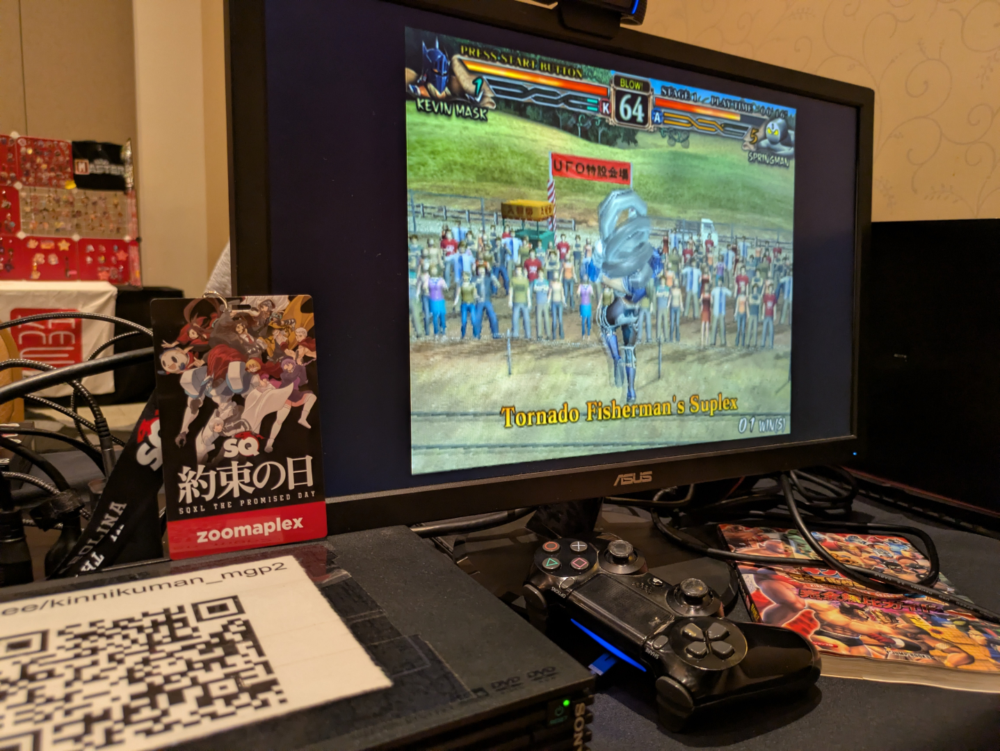
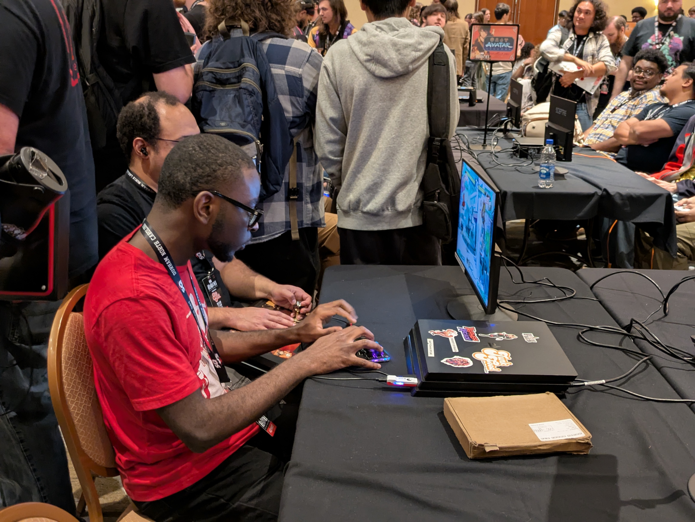
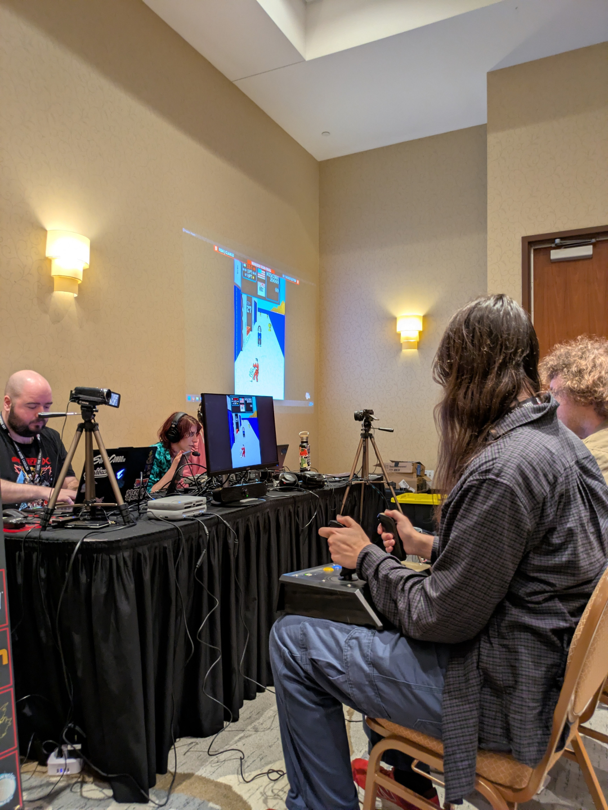
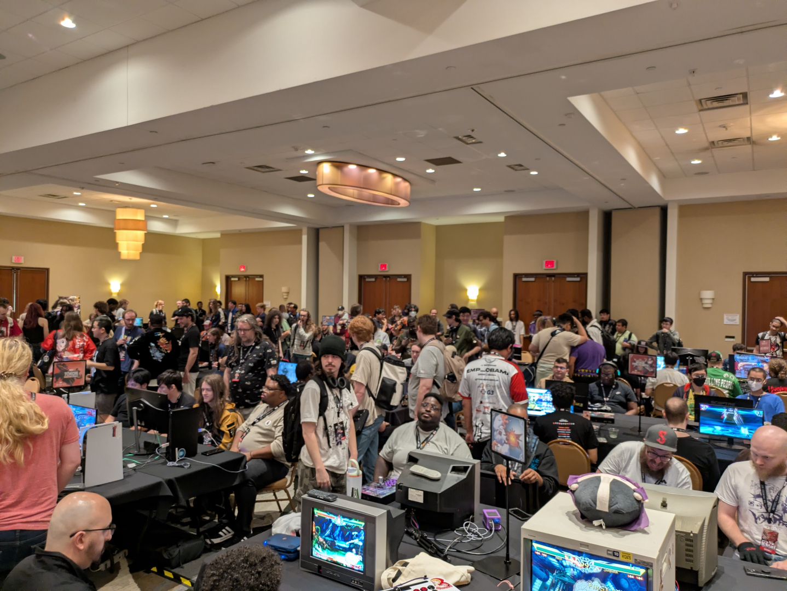
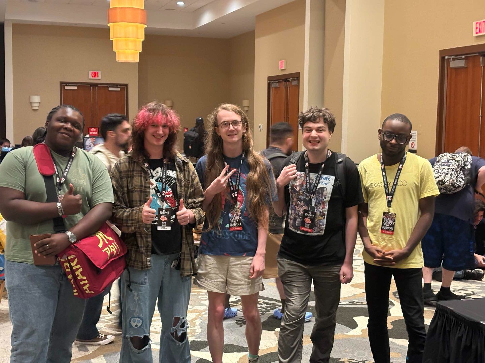
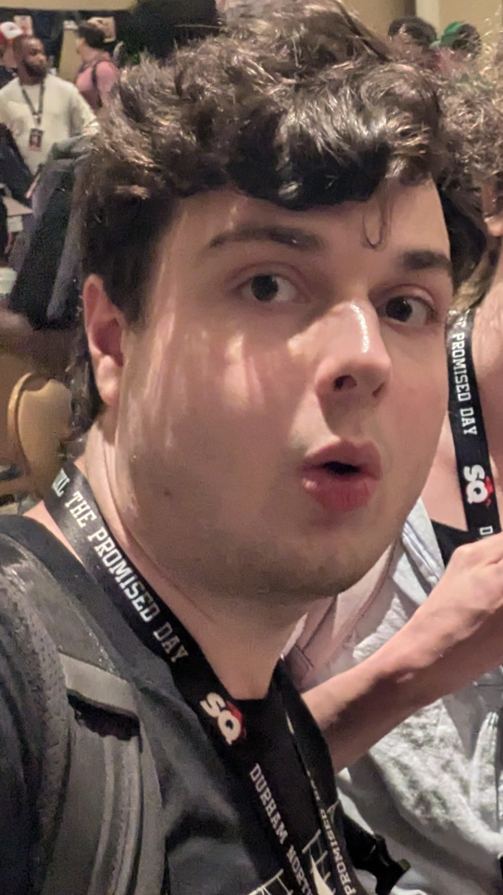
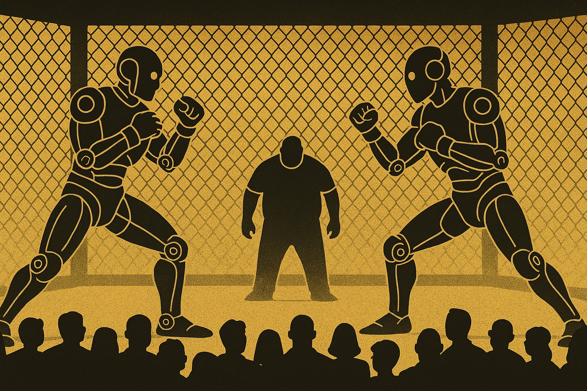

What Are Fighting Games?
Fighting games are a genre of video game, and pretty much exactly what it says on the tin: Each player controls a one or more characters, battling each other to reduce their opponent's life bar to zero. However, there's more to the genre beyond this broad definition, as most fighting games typically fall into one of a handful of categories.
When most people think of fighting games, their mind will picture a "2D fighter," where the camera captures the characters from a side view, and control is limited to the 2D plane. Many popular games are examples of this category, including Street Fighter and Mortal Kombat. Conversely, there are "3D fighters" like Tekken, where characters can step into and out of the z-axis. Of course, there are plenty of subcategories as well (platform fighters, airdahsers, etc.), leading to a wide range of games catering to different tastes.

How Do You Play Them?
To play fighting games, you really only need one thing: A desire to learn. Fighting games are some of the most difficult games to get into, in no small part to their frictional design and steep learning curves. Execution-wise, fighters test your muscle memory, reaction time, and situational awareness in ways most video games don't. Beyond this, each game has a plethora of situations and tactics you'll need to juggle while playing: footsies, mix-ups, conditioning, and combo routing are just some of the terms you'll hear when first starting. All of this means that fighting games are best enjoyed by those with curiosity, tenacity, and a willingness to ask for help.
As for how you actually control your character, there are plenty of devices to choose from. Besides your typical game controller, you may also choose to play using a fightstick, which features a joystick and buttons similar to that of an arcade cabinet. There's also leverless controllers, which take notes from keyboards in their design. In fact, there's a whole culture surrounding the design of fighting game peripherals!

Where Do People Go to Fight?
ANYWHERE! Because fighting games are a relatively niche hobby, players have adapted to playing them in basically any setting. The best place to start is your nearestlocal, where players gather weekly or monthly to play casuals sets of their favorite games, or compete in brackets. Your local is a great space to meet like-minded gamers, try titles you've never played before, and improve your skills.
Besides in-person gatherings, there's also online play. Up until recently, playing fighting games online was an uncomfortable experience, due to delay-based netcode being unable to keep up with the genre's frame-by-frame precision. However, with the advent of rollback netcode, as well as custom matchmaking clients for older titles, playing fighters online has become the main way to play for many people.

When Are the Tournaments?
Ah yes, tournaments. These are the ultimate fighting game gatherings, with regionals and majors happening year-round. The largest of these events fall under the umbrella of the Evolution Championship Series, or Evo. It's main event in the SoCal-Vegas area has been held every summer since 2002, and it's since expanded to events in Japan, France, and more.
Unfortunately, Evo was fully bought out in 2025 by the Qiddiya Investment Company, the main branch of Saudi Arabia's sportswashing strategy. This has resulted in the community pushing for more support of grassroots tournaments. One such event is the Chicago-based Frosty Faustings, which will next be held January 28-31, 2027. In North Carolina, there's SQXL, which just recently ran from October 3-4, 2026.

Why Are They Fun?
I believe what makes fighting games so fun is the way mechanics and characters come together to create a uniquely immersive experience. The intimacy of control offered to the player is unlike any other genre, and when combined with colorful fighter personalities which paint a vivid picture, you really can become one with your character.
More than anything, however, fighting games are fun because of the sense of community they provide. Lots of video games, even multiplayer ones, are insular experiences that don't challenge players in meaningful ways or encourage them to communicate, but fighting games have been a shared experience ever since their birth within arcades. Opportunities arise for communal learning and friendly rivalries, all for the love of the same niche genre.

About Me
My earliest exposure to fighting games was in 2014 with the relasse of Ultra Street Fighter IV on Steam. However, it wasn't until the release of Street Fighter 6 in 2023 that I really dove into the genre. Since then, I've developed a love for the classics, especially niche fighters forgotten by time. I'm far from the best player, but that's okay -- the friends I've made along the way makes it all worth it.
Some of my favorite fighting games are:
- Granblue Fantasy Versus Rising
- Street Fighter 6
- Street Fighter Alpha 3
- The King of Fighters '98
- Chaos Code: New Sign of Catastrophe
- Breakers Revenge

AI Prompts
The following prompt was used to create a baseline stylesheet to work with:
"Fill out the stylesheet to give this webpage a bold and aggressive look, while still remaining clean and readable. Try incorporating the New Rocker font from Google as the font used for the h1 and h2 elements, and use Grenze from Google for everything else. While the width of the header and footer elements can span the entire width, the main content probably shouldn't span the entire width."
After this initial prompt, which came with lots of errors, human additions and edits were made to the stylesheet. Additionally, AI was utilized when creating the JavaScript needed to hide sections of the webpage:
"Right now all page sections are hidden by default, only becoming visible when they are the target of the URL hash. How do I make the #what section visible by default?"
